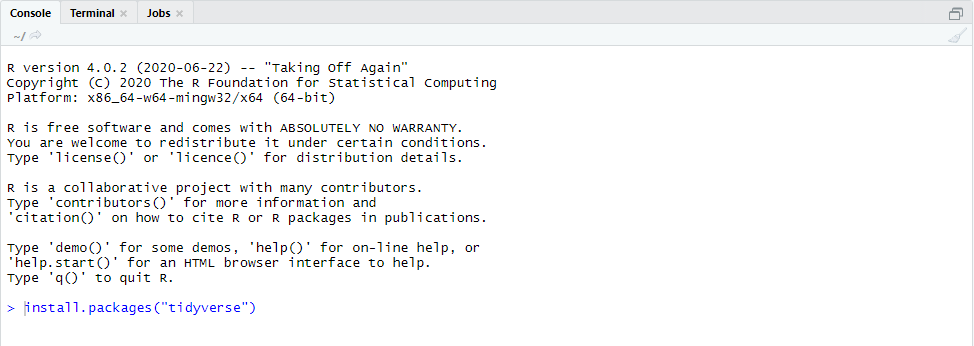
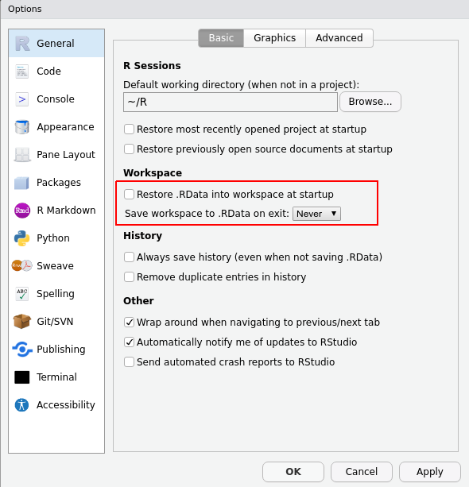

1 Instalace softwaru
Tato kapitola je věnována instalaci R, Rstudia a balíčků Tidyverse na všech platformá a pár základním tipům na usnadnění práce. Instalace softwaru se značně liší podle operačního systému počítače, takže si dejte pozor, která část instrukcí je pro vás relevantní!
Celý proces sestává ze čtyř kroků:
Instalace R
Instalace Rstudia
Instalace Tidyverse
Základní nastavení Rstudia
1.1 Instalace R
Úplně prvním krokem pro práci s R je, snad nepřekvapivě, instalace jazyka samotného.
1.1.1 Windows
R je možné stáhnout z oficiálních stránek projektu https://www.r-project.org. Čeští uživatelé budou pravděpodobně chtít stahovat z českého serveru, který je dostupný na adrese https://mirrors.nic.cz/R/index.html. Zde klikněte na Download R for Windows a poté na base. Po stažení je možné R nainstalovat jako jakýkoliv jiný program.
Možná víte, že existují dva typy procesorů, 32bitové a 64bitové. Setkat se dnes s 32bitovým procesorem je dnes poměrně vzácné, pokud ale takový počítač máte je nutné si dát pozor, jakou verzi R instalujete. Poslední verze R, která podporuje 32bitové procesory je 4.1., což není ta nejnovější. Pokud naopak máte 64bitový procesor, můžete si s klidem nainstalovat aktuální verzi R. Pokud si nejste jistí, můžete si procesor svého počítače zkontrolovat v nastavení. Obdobné omezení se týka i Rstudia, které podporuje 32bitové procesory pouze do verze 1.2.
Ti z vás, kteří preferují instalaci softwaru přes manager, mohou využít Chocolatey, Po instalaci manageru samotného stačí do terminálu zadat
choco install rUpozorňujeme ale, že z naší zkušenost se správcům Cholocatey balíčku ne vždy daří držet krok s aktuální oficiální verzí .
1.1.2 MacOS
R je možné stáhnout stejně jako u Windows verze z https://mirrors.nic.cz/R/, kde zvolte Download R for MacOS. Pokud máte Macbook s M1 procesorem (tedy Macbook z roku 2020 nebo mladší), zvolte verzi arm64. U starších verzí zvolte základní verzi R. Po stažení je možné nainstalovat jako jakýkoliv jiný software.
Pokud preferujete instalaci pomocí software manageru, je možné využít Homebrew. Pro instalaci Homebrew otevřete terminál a použijte příkaz
/bin/bash -c "$(curl -fsSL https://raw.githubusercontent.com/Homebrew/install/HEAD/install.sh)"a řiďte se instrukcemi. Po úspěšné instalaci Homebrew je možné nainstalovat R pomocí příkazu:
brew install r 1.1.3 Linux
Konkrétní podoba instalace R pro Linuxu závisí na tom, jakou distribuci používáte. R oficiálně podporuje tři distribuce a to Debian, Ubuntu a Fedora/Redhead. Instrukce pro instalaci jsou dostupné na https://mirrors.nic.cz/R/. Velkou pozornost doporučujeme věnovat repozitářům pro instalaci balíčků, jelikož jejich napojení se liší distribuci od distribuce a jejich správnou přípravou si do budoucna ušetříte mnoho času!
Pokud používáte jinou než jednu z oficiálně podporovaných distribucí, konzultuje svůj package manager.
1.2 Instalace Rstudia
Po instalaci R jste teoreticky připravení pro další práci! Rychle ale zjistíte, že obsluhovat R pouze z příkazové řádky není ani zdaleka ideální. Analytici a vývojáři proto využívají řadu programů, zvané Integrated Developer Environments (IDE), které psaní kódu usnadňují. Jedním z nejlepších (podle nás dokonce nejlepší!) IDE pro práci v R je Rstudio. Rstudio pro všechny operační systémy je dostupné ke stažení na https://www.rstudio.com/products/rstudio/download/#download. Instalace probíhá klasickým způsobem.
Ti z vás, kteří používají software manager, mohou využít Chocolatey pro Windows (choco install r.studio), Homebrew pro MacOS (brew install rstudio), případně konzultovat dokumentaci k vaší Linux distribuci.
Rstudio při prvním spuštění vypadá zhruba takto:

1.3 Instalace Tidyverse
Posledním krokem je instalace sady R balíčků Tidyverse, které budeme využívat v rámci této knihy. Tyto balíčky lze nainstalovat uvnitř Rstudia pomocí příkazu install.packages("tidyverse") zadaného do konzole na levé straně (nezapomeňte na uvozovky!):

Instalace všech potřebných balíčků trvá zpravidla pár minut (s výjimkou některých uživatelů Linuxu, kteří musí balíčky kompilovat. Vy si počkáte zhruba tři čtvrtě hodiny). Úspěšná instalace bude zakončená větou package tidyverse successfully unpacked and MD5 sums checked.
1.4 Základní nastavení Rstudia
Jako úplně poslední věc se vyplatí změnit dvě výchozí nastavení, kterými si dlouhodobě ušetříte práci i nervy. Rstudio ve výchozím nastavení při ukončení ukládá všechny nahraná data a další vámi vytvořené objekty a znovunahraje je pokaždé, když R znovu zapnete. To je ovšem v praxi spíše na škodu, protože to znamená, že zanedlouho budete mít vaše prostředí zaneřáděné daty z předchozích analýz a projektů. Tomu se dá jednoduše zabránit tím, že si v Rstudiu otevřete záložku Tools, a v ní volbu Global options. V tomto nastavení odškrtněte možnost Restore .Rdata into workspace at startup a zároveň nastavte možnost Save workspace to .Rdata on exit na never tak, jak je to na obrázku níže.
